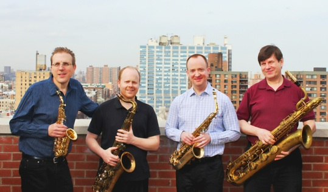
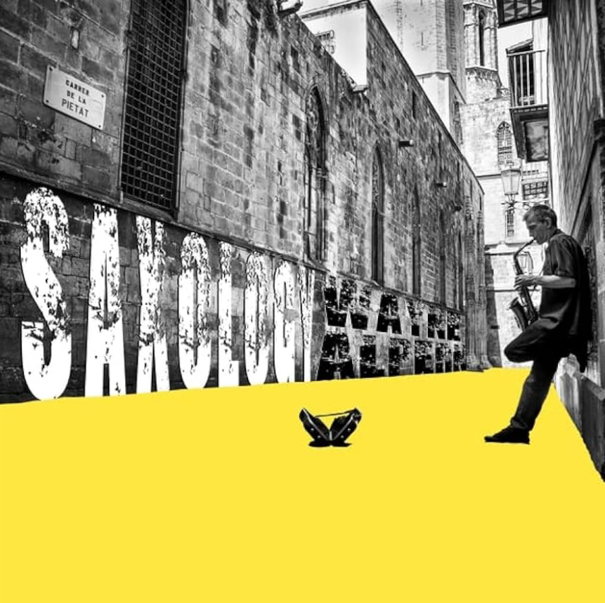

The New York Saxophone Quartet

Our album with Wayne Alpern, Saxology, was the #16 album for 2023 on the Roots Music Report’s Top Jazz Album Chart.
“The ultimate American saxophone ensemble”
“... immaculate precision and impressive range of
dynamics are the hallmarks of this virtuoso group.”
Paul Harvey - Woodwind World Magazine
• • •
The New York Saxophone Quartet is dedicated to commissioning new works for the saxophone ensemble and performing contemporary cutting-edge repertoire in both the classical and jazz fields. Our goal is to establish a worthwhile link between our audience and the new works we present, as well as to educate and inspire the next generation of performers.
• • •
The history of the NYSQ might be characterized as a series of fortuitous events: a chance conversation that brought about its existence. Ray Beckenstein, the founding member, was an active recording musician in the 1950’s. Jack Lewis, a prominent A & R man, approached Ray with a proposition. Having been impressed by the work of Marcel Mule and the French Saxophone Quartet, he suggested it would be a promising idea to try some of the French repertoire with American musicians. With diligence and dedication, the eventual outcome exceeded all expectations.
At the outset in 1959, the only music accessible to the newly formed group was the classical French repertoire. As the ensemble gained notoriety and developed its own American sound, prominent composers and arrangers began to write new material, including Gene DiNovi, John Carisi, Hal Schaefer, Manny Albam, Calvin Hampton, George Handy, Eddie Sauter, and Phil Woods.
Former members include Stan Getz, Al Cohn, Albert Regni, Danny Bank, Dave Tofani, Ray Beckenstein, Wally Kane, Harvey Estrin, Hal McKusick, Ed Caine, Al Epstein, Billy Kerr, Alva Hunt, Ralph Olsen, Ken Hitchcock, Lino Gomez, Rob Debellis, Dennis Anderson and Dan Goble.
• • •
The NYSQ continues to represent the highest standard in contemporary music making. As the result of decades of practice and comprehensive study of the idiom, our sound is vibrant, resonant, and distinctly different from any other group on the scene today. We are recognized not only for our abilities as classical musicians, but also for our involvement in jazz education and commercial music. As experienced saxophonists and multi-reed instrumentalists, we are afforded the opportunity to perform within a broad range of styles, earning us a solid reputation within the international music community.
Original compositions and commissions comprise the vast majority of our library. Recent works by Eric Ewazen, Michael Holober, Eric Moe, Dennis Anderson, Edward Paul Mascari and Dorothy Hindman were premiered at Weill Recital Hall at Carnegie Hall. We feature works from the classical saxophone repertoire, transcriptions and special arrangements from the American popular songbook; including the music of George Gershwin, Harold Arlen, ‘Duke’ Ellington, Kurt Weill, Scott Joplin, Victor Young and many others.
Specialty material for saxophone quartet with voice, tuba, trumpet, rhythm section, chamber ensemble and full orchestra provides a compelling diversity in concert programming. Master Classes and clinics are essential components of our educational outreach addressing rehearsal technique, doubling, repertoire, improvisation, and all matters pertaining to the Art of the Saxophone.
In concert, we have performed in the United States, Canada, Mexico, France, Germany, Italy, Great Britain and Japan, including recitals at Carnegie Hall, Merkin Auditorium, Weill Recital Hall at Carnegie Hall, Dizzy Gillespie Auditorium, Charlotte Performing Arts Center, Symphony Space @Leonard Nimoy/Thalia Theater, Mannes School of Music, WQXR and WNYC Radio. We have appeared with the St. Paul Chamber Orchestra, New York Philharmonic; participated in international music conferences, Community Concerts Tours, and World Saxophone Congresses.
“....The NYSQ enthralled them...gorgeous blend...beautifully
phrased with expert elegance” The New York Post - George Simon
Past Performances:
NYSQ 60th Anniversary Concert @ Christ and St. Stephen’s Church
Hofstra University
Western Connecticut State University
Recital @ The Player's Theater - NYC
featuring world premiere works for saxophone quartet
Christmas Festival Concert - West End Collegiate Church
Weill Recital Hall at Carnegie Hall, NYC - all premieres recital
Symphony Space @ Leonard Nimoy/Thalia Theater, NYC - recital
Christ & St. Stephen’s Episcopal Church, NYC – recital - ‘Sax in the City’
Juilliard School of Music, NYC - faculty recital
Mannes College of Music, NYC - faculty recital
World Saxophone Congresses
• Nuremberg, Germany
• Tokyo, Japan
• Pesaro, Italy
• Montreal, Canada
Douglaston Concerts ’First Sunday Series’, Douglaston, NY
The Charlotte Performing Arts Center, Punta Gorda, FL
‘An Evening of Jazz’ at the Dizzy Gillespie Auditorium, NYC
‘Sundays on the Island’ Chamber Music Series, City Island, NY
Queensborough Community College - Need Hall – recital and Master Class
Community Concerts Associations
• El Dorado, Kansas
• Bolivar, Missouri
• Michigan City, Indiana
• Waterloo, Iowa
Kosciuszko Foundation – The Bohemian Society, NYC
WNYC Radio - ‘Around Town with Jonathan Shaffer’, NYC
Woodwind & Brasswind, NYC
St. Peters Episcopal Church in Chelsea, NYC – CD release concert
The Dorot House, NYC

